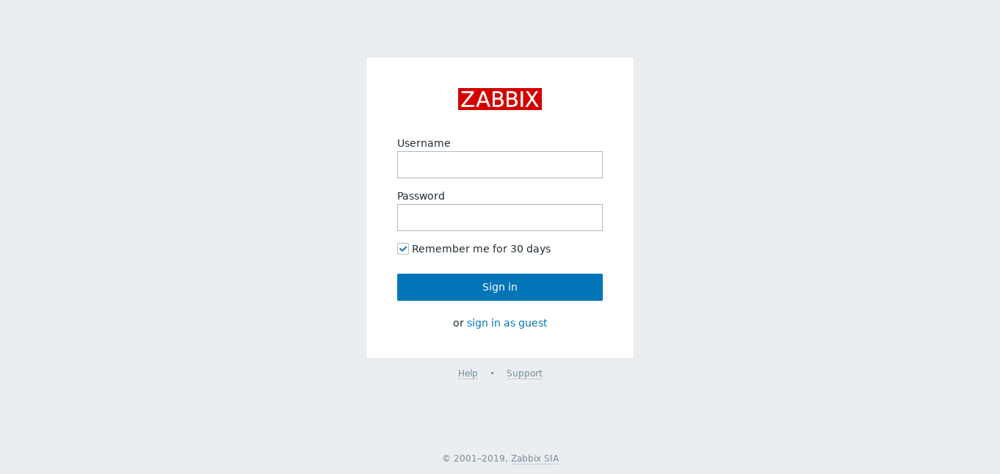
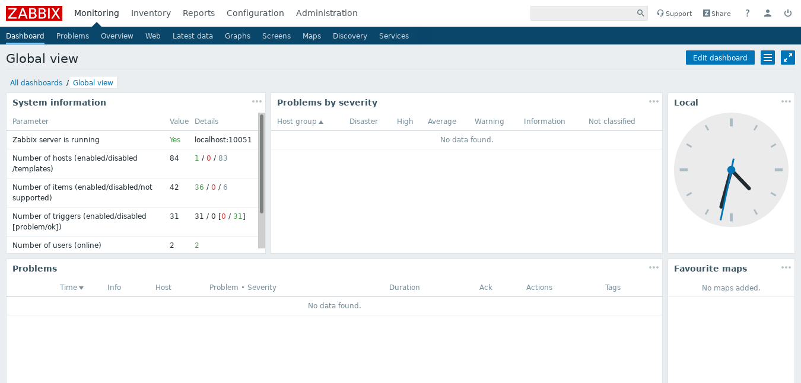

ZabbixによるNetBSDシステム監視
Zabbixについて
ZabbixはZabbix LLC.という企業主体で開発されているFLOSS（GPLv2）の監視ソフトウェアです。バックエンドはC言語、フロントエンドはPHPで実装されています[1]。
Zabbixの監視システムをおおまかに図にすると図1のようになります。
図1に示したとおりZabbixはServer-Agentモデルの監視をおこないます。監視対象のシステムにZabbix Agentがインストールされ、Zabbix Serverは各Zabbix Agentへ監視項目を問い合わせ、返ってきたデータをデータベースに格納します[2]。取得した監視データはZabbix Webフロントエンドから確認でき、グラフにプロットできます。
Zabbix LLC.からはGNU/Linuxディストリビューション向けにServerおよびAgentのパッケージが提供されており、FreeBSD・OpenBSD・MacOS・Windows・AIX・HP-UXなどの環境に対してはAgentのパッケージのみ提供されています。NetBSD向けパッケージは提供されておらず、pkgsrc(7)からsysutils/zabbixパッケージをインストールする必要があります。Zabbix Webフロントエンドは別途sysutils/zabbix-frontendパッケージをインストールしなければなりません。
インストール
PostgreSQLのセットアップ
ここではZabbix Serverとデータベースを動かすホストが同一だとします。標準ではsysutils/zabbixパッケージはdatabase/postgresql95-clientパッケージに依存しているため、database/postgresql95-serverをインストールしてください。
cd /usr/pkgsrc/database/postgresql95-server make install clean clean-dependsPostgreSQLパッケージのRCスクリプトを/etc/rc.dにコピーします。
cp /usr/pkg/share/examples/rc.d/pgsql /etc/rc.d/etc/rc.confでPostgreSQLの自動起動を有効にします。
pgsql=YESNetBSD標準の設定ではセマフォ（semaphore）が足りなくなりZabbix Serverかデータベースのどちらかが動きません。そこでsysctl(8)からシステム中のセマフォの数を増やす設定をします。PostgreSQL 8.1のドキュメントにはNetBSDおよびOpenBSDでのパラメータ設定の例が挙げられています。ここではこの例にしたがい設定します。
sysctl -w kern.ipc.shmseg=256
sysctl -w kern.ipc.semmns=512
sysctl -w kern.ipc.shmmni=256
sysctl -w kern.ipc.semmnu=256/etc/sysctl.confにも同様の設定を追加します。PostgreSQLを起動します。
/etc/rc.d/pgsql initdb -E unicode
service pgsql start
PostgreSQLにZabbix Server用のユーザとデータベースを作成します。database/postgresql95-serverパッケージは標準ではpgsqlユーザがPostgreSQLの管理者なようです。ここでzabbixユーザに設定したパスワードは後で利用します。
createuser -U pgsql --pwprompt zabbix
createdb -U pgsql -O zabbix -E UTF8 --template=template0 zabbixデータベース作成後はZabbix用のデータベースを初期化します。初期化用のSQL文はパッケージで提供されています。
psql -U zabbix zabbix < /usr/pkg/share/zabbix-server-postgresql/schema.sql
psql -U zabbix zabbix < /usr/pkg/share/zabbix-server-postgresql/images.sql
psql -U zabbix zabbix < /usr/pkg/share/zabbix-server-postgresql/data.sqlsysutils/zabbixのインストール
sysutils/zabbixパッケージをインストールします。このパッケージにはZabbix Agent・Zabbix Server・Zabbix Proxyが含まれています。pkgsrc-2019Q3時点ではZabbix 4.0.9が提供されるようですが、4.0.9ではZabbix側のNetBSD依存のコードが古くビルドに失敗します。そこで、このパッケージは修正パッチがあるpkgsrc-currentブランチを使ってください。
cd /usr/pkgsrc/sysutils/zabbix
cvs update -dP -A
make install clean clean-depends
必要なRCファイルを用意します。
cp /usr/pkg/share/examples/rc.d/zabbix_agentd /etc/rc.d
cp /usr/pkg/share/examples/rc.d/zabbix_server /etc/rc.d
/etc/rc.confに以下を追記します。
zabbix_agentd=YES
zabbix_server=YES
Zabbix Serverの設定と起動
Zabbix Serverの設定ファイル/usr/pkg/etc/zabbix_server.confを編集します。確認すべき設定項目は以下のとおりです。
LogFile- Zabbix Serverが出力するログファイルのパスです。
DBName- Zabbix Serverが使うデータベース名です。本稿の手順に従った場合、標準の
zabbixのままで問題ありません。
DBUser- Zabbix Serverがデータベースへアクセスするためのユーザ名です。本稿の手順に従った場合、標準の
zabbixのままで問題ありません。
DBPasswordcreateuserコマンドを実行したときにzabbixユーザに設定したパスワードを設定します。
設定後はZabbix Serverデーモンを実行してください。
service zabbix_server start
sysutils/zabbix-frontendのインストール
Zabbix Webフロントエンドを使うにはsysutils/zabbix-frontendパッケージをインストールします。pkgsrc-2019Q3ではこのパッケージはPHP 7.1に依存していますが、Apache上でPHP 7のスクリプトを実行するにはモジュールではなくCGIを使うように標準の設定が変更されました。そこでwww/php-fpmパッケージも一緒にインストールしなければなりません。これはPHPのFastCGI実装です。また、PHPからPostgreSQLを操作するためのライブラリdatabases/php-pgsqlもインストールします。
cd /usr/pkgsrc/sysutils/zabbix-frontend
make install clean clean-depends
cd /usr/pkgsrc/www/php-fpm
make install clean clean-depends
cd /usr/pkgsrc/databases/php-fpm
make install clean clean-depends
Webサーバとphp-fpmのRCファイルを用意します。
cp /usr/pkg/share/examples/rc.d/apache /etc/rc.d
cp /usr/pkg/share/examples/rc.d/php_fpm /etc/rc.d
/etc/rc.confに以下を追記します。
apache=YES
php_fpm=YES
Zabbix Webフロントエンドの設定
Zabbix Webフロントエンドを使うには、Apacheとphp-fpmの設定が必要です。はじめにphp-fpmの設定をおこないます。/usr/pkg/etc/php-fpm.d/zabbix.confを新規作成し、次のように編集してください。
[zabbix]
user = www
group = www
listen = /var/run/php-fpm_zabbix.sock
listen.owner = www
listen.group = www
listen.allowed_clients = 127.0.0.1
pm = dynamic
pm.max_children = 50
pm.start_servers = 5
pm.min_spare_servers = 5
pm.max_spare_servers = 35
php_value[session.save_handler] = files
php_value[max_execution_time] = 300
php_value[memory_limit] = 512M
php_value[post_max_size] = 128M
php_value[upload_max_filesize] = 128M
php_value[max_input_time] = 300
php_value[max_input_vars] = 10000
php_value[always_populate_raw_post_data] = -1
php_value[date.timezone] = Asia/Tokyo
つぎにApacheの設定をおこないます。/usr/pkg/etc/httpd/httpd-php.confを新規作成し、以下のように編集してください。
# /usr/pkg/etc/httpd/httpd-php.conf
AddType text/html .php
DirectoryIndex index.php
SetHandler application/x-httpd-php
次に/usr/pkg/etc/httpd/httpd-zabbix.confを新規作成し、以下のように編集してください。
# /usr/pkg/etc/httpd/httpd-zabbix.conf
Alias /zabbix /usr/pkg/share/zabbix/php
<Directory "/usr/pkg/share/zabbix/php">
Options -FollowSymLinks
AllowOverride Limit
<LimitExcept POST GET>
Order deny,allow
Deny from all
</LimitExcept>
<IfModule mod_authz_core.c>
Require all granted
</IfModule>
<IfModule !mod_authz_core.c>
Order allow,deny
Allow from all
</IfModule>
<files *.php>
SetHandler application/x-httpd-php
SetHandler "proxy:unix:/var/run/php-fpm_zabbix.sock|fcgi://localhost"
</files>
</Directory>
<Directory ~ "^/usr/pkg/share/zabbix/php/(conf|api|include|local)/">
<IfModule mod_authz_core.c>
Require all denied
</IfModule>
<IfModule !mod_authz_core.c>
Order deny,allow
Deny from all
</IfModule>
<files *.php>
<IfModule mod_authz_core.c>
Require all denied
</IfModule>
<IfModule !mod_authz_core.c>
Order deny,allow
Deny from all
</IfModule>
</files>
</Directory>
最後に/usr/pkg/etc/httpd/httpd.confを編集します。以下の差分のように変更してください。
--- /usr/pkg/share/examples/httpd/httpd.conf 2019-11-17 10:53:36.000000000 +0900
+++ httpd/httpd.conf 2019-11-17 11:56:43.538984425 +0900
@@ -127,11 +123,11 @@
LoadModule setenvif_module lib/httpd/mod_setenvif.so
LoadModule version_module lib/httpd/mod_version.so
#LoadModule remoteip_module lib/httpd/mod_remoteip.so
-#LoadModule proxy_module lib/httpd/mod_proxy.so
+LoadModule proxy_module lib/httpd/mod_proxy.so
#LoadModule proxy_connect_module lib/httpd/mod_proxy_connect.so
#LoadModule proxy_ftp_module lib/httpd/mod_proxy_ftp.so
#LoadModule proxy_http_module lib/httpd/mod_proxy_http.so
-#LoadModule proxy_fcgi_module lib/httpd/mod_proxy_fcgi.so
+LoadModule proxy_fcgi_module lib/httpd/mod_proxy_fcgi.so
#LoadModule proxy_scgi_module lib/httpd/mod_proxy_scgi.so
#LoadModule proxy_uwsgi_module lib/httpd/mod_proxy_uwsgi.so
#LoadModule proxy_fdpass_module lib/httpd/mod_proxy_fdpass.so
@@ -270,7 +266,7 @@
# is requested.
#
<IfModule dir_module>
- DirectoryIndex index.html
+ DirectoryIndex index.html index.php
</IfModule>
#
@@ -523,3 +519,6 @@
SSLRandomSeed connect builtin
</IfModule>
+IncludeOptional etc/httpd/httpd-zabbix.conf
+IncludeOptional etc/httpd/httpd-php.conf
+IncludeOptional etc/httpd/httpd-mpm.conf
最後に/usr/pkg/share/zabbix/php/conf/zabbix.conf.phpを次のように編集します。このファイルは通常、Zabbix Webフロントエンドの初期設定画面で自動的に作成されますが、pkgsrcからインストールしたパッケージではこのパスへの書き込み権限が無くエラーになります。
<?php
// Zabbix GUI configuration file.
global $DB, $HISTORY;
$DB['TYPE'] = 'POSTGRESQL';
$DB['SERVER'] = 'localhost';
$DB['PORT'] = '0';
$DB['DATABASE'] = 'zabbix';
$DB['USER'] = 'zabbix';
// PostgreSQLのzabbixユーザのパスワードを書く
$DB['PASSWORD'] = '設定したパスワード';
// Schema name. Used for IBM DB2 and PostgreSQL.
$DB['SCHEMA'] = '';
$ZBX_SERVER = 'localhost';
$ZBX_SERVER_PORT = '10051';
$ZBX_SERVER_NAME = '';
$IMAGE_FORMAT_DEFAULT = IMAGE_FORMAT_PNG;
// Uncomment this block only if you are using Elasticsearch.
// Elasticsearch url (can be string if same url is used for all types).
//$HISTORY['url'] = [
// 'uint' => 'http://localhost:9200',
// 'text' => 'http://localhost:9200'
//];
// Value types stored in Elasticsearch.
//$HISTORY['types'] = ['uint', 'text'];
php-fpmとApacheのデーモンを動かします。
service php_fpm start
service apache start
Webブラウザから http://127.0.0.1/zabbix へアクセスします。標準ではユーザAdminのパスワードには「zabbix」が設定されています。

図2: Zabbix Webフロントエンドのログインページ。 標準ではAdmin/zabbixでログインできます。

図3: Zabbix Webフロントエンドにログインした直後のダッシュボードページ。
Zabbix Agentの設定と起動
Zabbix Agentの設定ファイルは/usr/pkg/etc/zabbix_agentd.confです。基本的には以下の設定項目を確認します。
LogFile- Zabbix Agentのログファイルのパスです。
Server- Zabbix ServerのDNS名かIPアドレスです。
ServerActive- Active Checkの監視データを送信する先のZabbix ServerのDNS名かIPアドレスです。基本的には
Serverの設定と同じになるかと思われます。
Hostname- Zabbix Agentのホスト名です。Zabbix AgentがインストールされているOSのホスト名ではありません。
ここでは次のように設定をしました。なお、/var/log/zabbixディレクトリは新規作成し、ディレクトリのオーナとグループをzabbix.zabbixに変更しています。
LogFile=/var/log/zabbix/zabbix_agentd.log
Server=127.0.0.1
ServerActive=127.0.0.1
Hostname=Zabbix server
設定後はZabbix Agentデーモンを実行してください。
service zabbix_agentd start
後注
- Zabbix 4.4からZabbix AgentをGo言語で再実装したZabbix Agent 2がリリースされました。↑
- ServerからAgentへ向けた監視データの問い合わせをPassive Checkと呼びます。逆にZabbix AgentからZabbix Serverへ向けて監視データを送信する場合はActive Checkと呼びます。↑